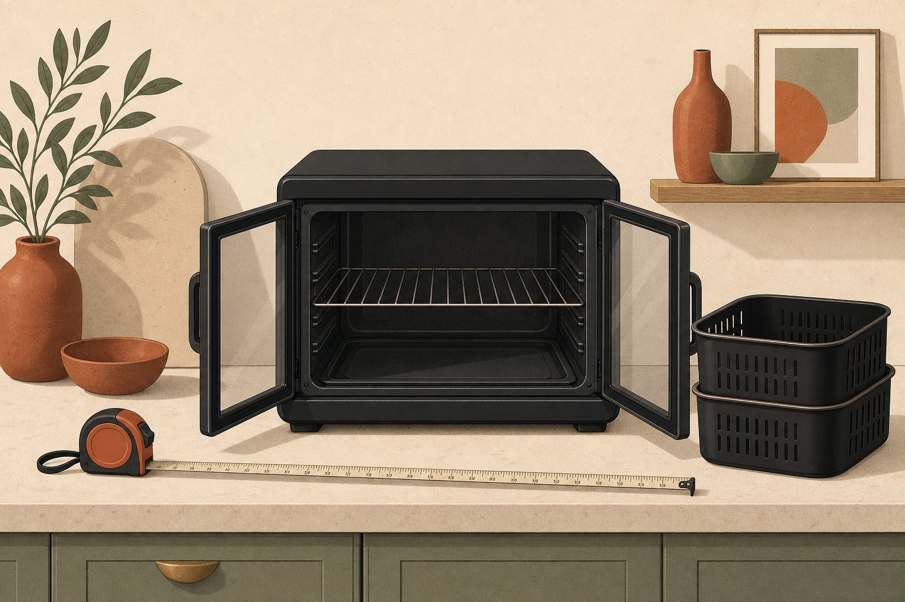

Feature tax
French doors, Sync Finish and a 450°F button
Three listings, twenty-odd named features, and one honest category: the ones that change what you can cook, and the ones that just change the price of the word 'multi'.

Air fryer listings read like rap battles. Every title has to out-name the last one, and you are left with a wall of proper nouns: Sync Finish, Hi-Fry, TurboFry, 24 One-Touch Preset Options. Some of those words describe a mechanism you will use weekly. Some describe a marketing count.
The way to tell which is which: ask whether the feature changes what fits, what cooks at the same time, or how hot it gets. If it changes none of those three, it is a convenience, not a capability.
Sorted against that test
| Phrase in the listing | Which machine | What it plausibly changes | Source |
|---|---|---|---|
| 2 Independent 3Qt … Frying Baskets | Chefman 6 Qt dual basket | Two foods, two settings, one appliance. This is the capability of the whole design. | S14 |
| Sync Finish | Chefman 6 Qt dual basket | Timing, not heat: the listing pairs it with the dual-basket layout, which is where a finish-time problem lives. | S14 |
| Easy View Windows | Chefman 6 Qt dual basket | Lets you check colour without opening a drawer. Note it is plural — a window per basket. | S14 |
| Auto Shutoff | Chefman 6 Qt dual basket | A safety behaviour named outright, with no timing stated. | S14 |
| 24 One-Touch Preset Options | Emeril Lagasse 26QT | Convenience: fewer dial fumbles. A preset is a saved temperature and time, not a new capability. | S15 |
| French Door / Extra Large Interior | Emeril Lagasse 26QT | Geometry. Side-opening doors need clearance to swing, and a tall cavity fits dishes a basket will not. | S15 |
| Six Cooking Accessories Included | Emeril Lagasse 26QT | What arrives in the box. Which six, the title does not say. | S15 |
| 450°F Hi-Fry Option | Chefman TurboFry 8 Qt | Heat ceiling. 450°F is stated in this title, and it is the only temperature figure across all three. | S16 |
| TurboFry® 4-in-1 | Chefman TurboFry 8 Qt | A count. The title names three modes — Bake, Dehydrate, Frozen — with air frying as the fourth, and does not enumerate the set. | S16 |
| Nonstick Dishwasher-Safe (all three) | all | Cleaning, and it is a claim about the removable parts only. See the cleaning piece. | S14 S15 S16 |
The one number nobody should have to share between models
Two of these listings use the same name — Hi-Fry — for what looks like the same idea. Only one of them attaches a temperature to it: the 8 Qt TurboFry says 450°F S16. The 6 Quart dual-basket title says Hi-Fry with no number at all S14.
Same word, different documentation. If a specific heat ceiling matters to you — thin-cut fries, searing, reheating something that went soggy — hunt the number, not the brand name. Two listings can share a marketing term and not share a spec.
"Hi-Fry" appears twice here. A temperature appears beside it once.
What to ignore, courteously
- Any '-in-1' on its own. Nine-in-one and four-in-one are counts of modes; a mode is a preset. Ask what temperatures and what racks.
- Preset counts as a proxy for quality. 24 presets on the 26QT oven tells you the dial has been busy, not that dinner is better S15. It is a genuinely nice feature for someone who cooks the same eight things.
- Accessory counts without a list. Six Cooking Accessories Included is only useful once you know if one of them is a rotisserie spit, a stone, or two racks S15.